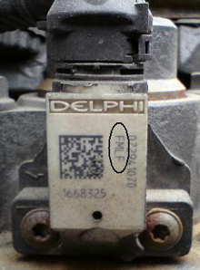

This function should be run if a pump unit has been replaced or moved, and is done to program the pump units for each cylinder. The pump units are used together with the injectors to control fuel injection. The pump unit's 4-digit code is a correction value and is used by the control unit to optimize fuel injection.
Cylinder 1 is located on the vibration-dampened side of the engine.
Test conditions:
Ignition on, engine off.
Parking brake applied.
Transmission in neutral.

Procedure:
Start the function.
A dialogue box shows current pump unit codes.
Select the cylinder for which the pump unit should be programmed.
Enter new pump code.
A dialogue box shows new pump unit codes.
Calibration is performed.
The function is done.
If the function fails, check the test conditions and repair any faults.